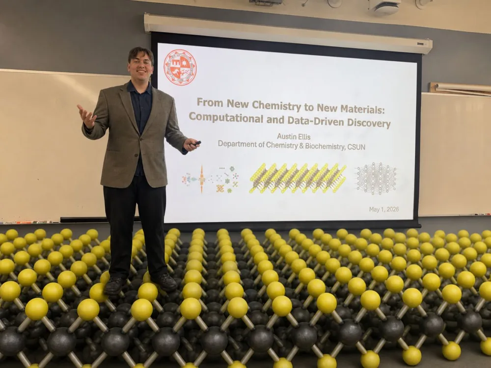
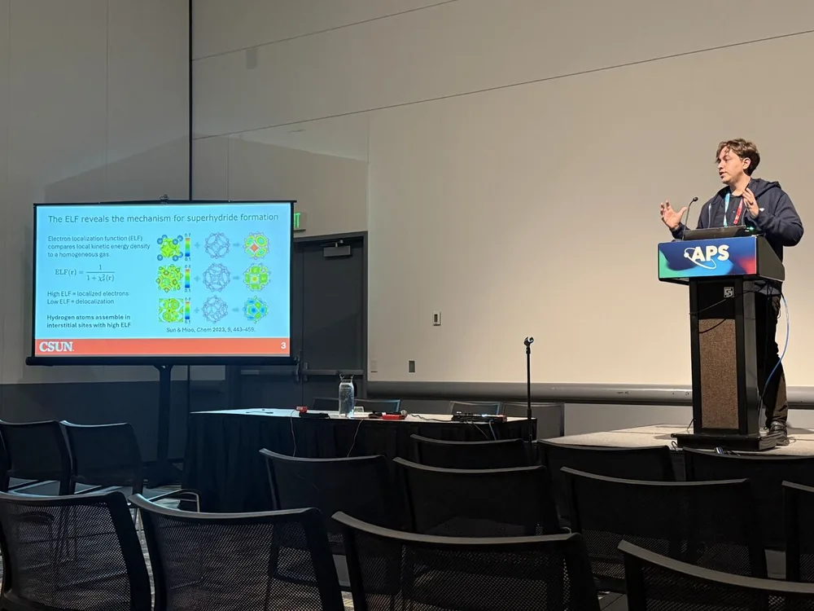
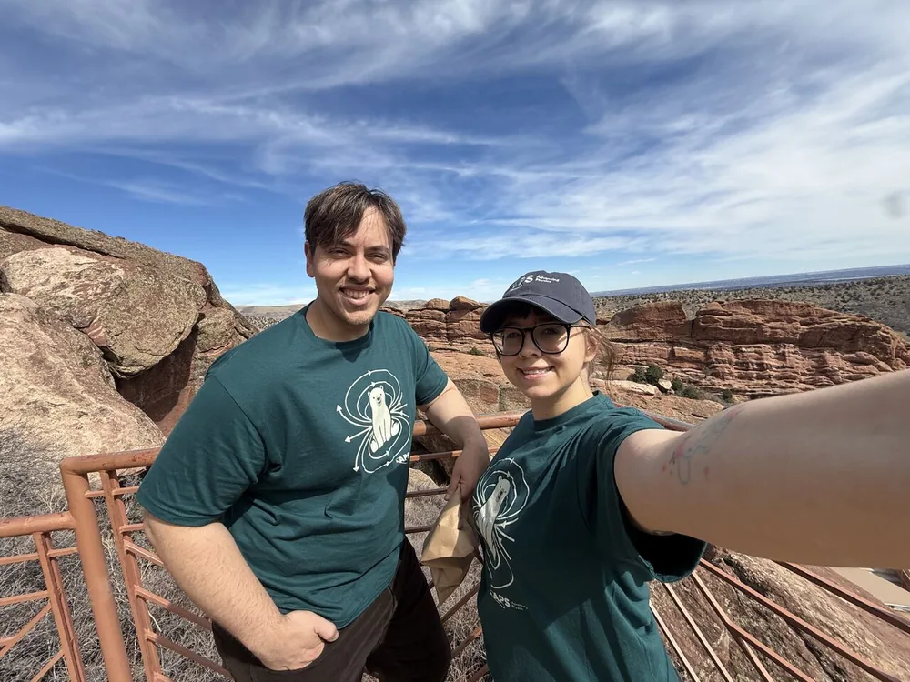
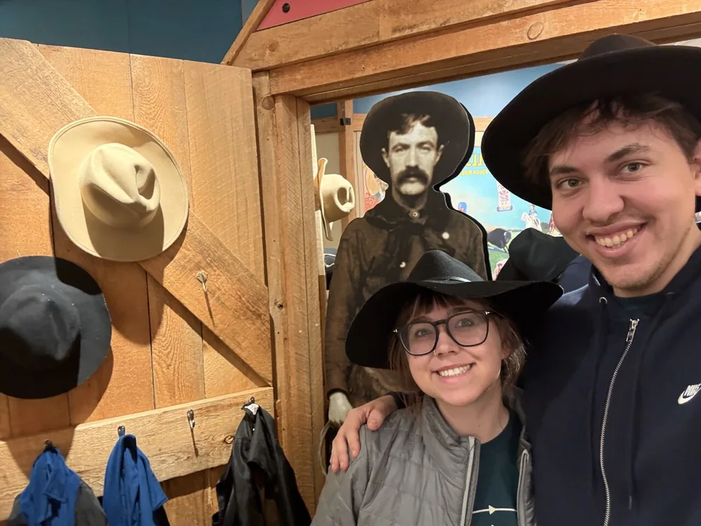
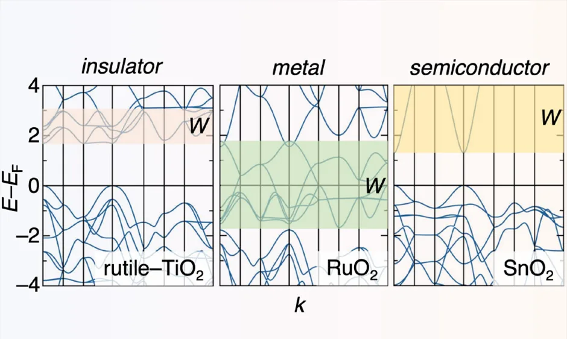
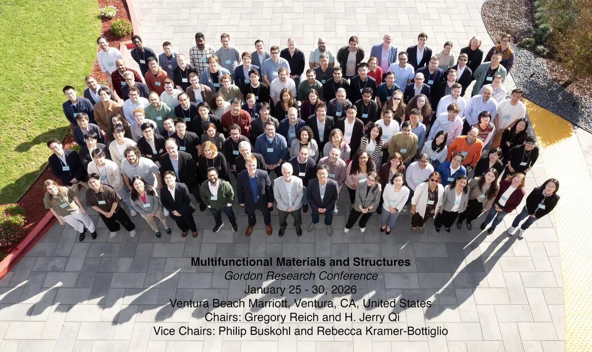
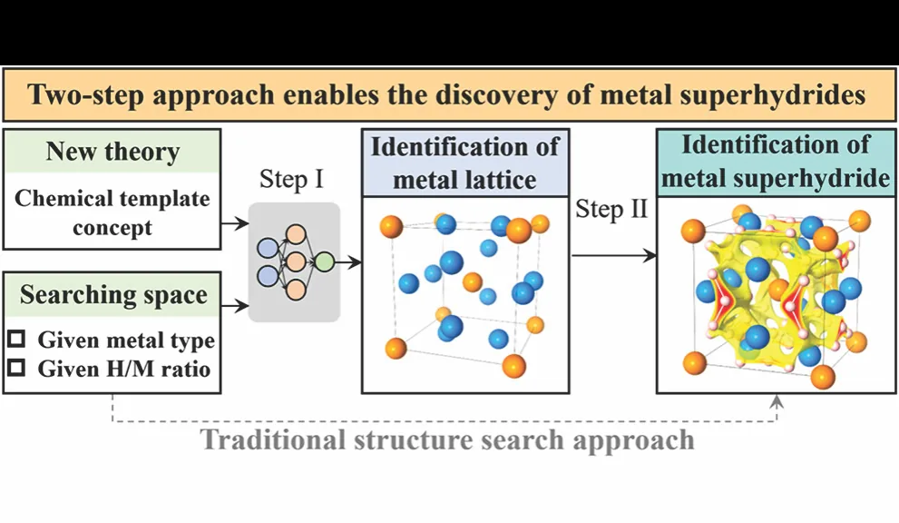
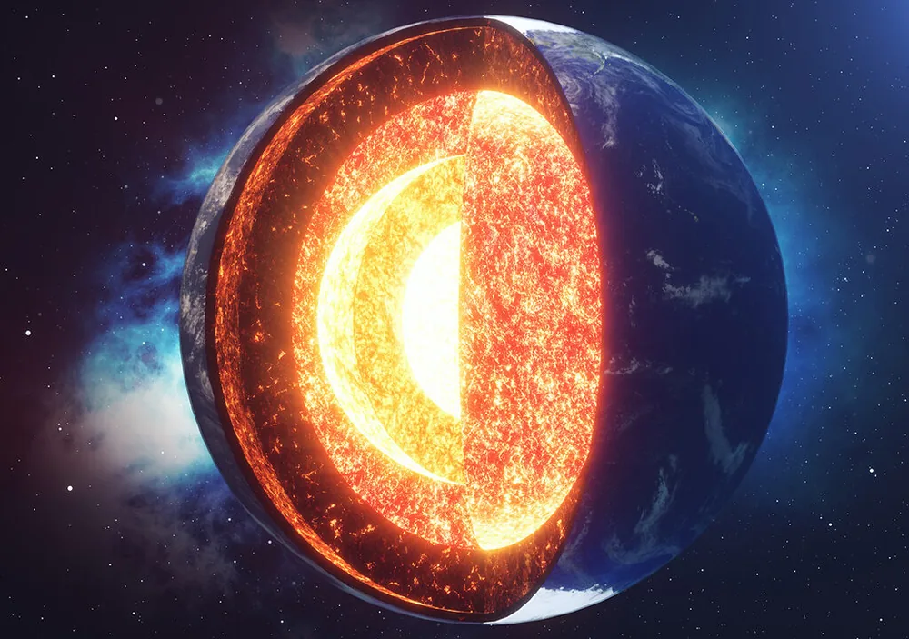

OSZICAR
News: the full log, newest first
austin ~/austin-ellis $ cat OSZICAR
First CNMS User Meeting
In August, I attended my first CNMS User Meeting at Oak Ridge National Laboratory and presented a poster on my internship work.
ReactionFlow on GitHub
I put ReactionFlow on GitHub. It is an open-source tool that takes the bond changes seen in molecular dynamics with machine-learned interatomic potentials and turns them into converged reaction paths.
Research internship at ORNL
In May, I started a research internship at Oak Ridge National Laboratory’s Center for Nanophase Materials Sciences, working with Dr. Jingsong Huang and Dr. Ilia Ivanov on automated reaction discovery with machine-learned interatomic potentials.
M.S. thesis defense
On May 1, I defended my M.S. thesis at CSUN. The work connects ML-accelerated materials discovery, high-pressure superhydrides, and 2D electrides through quasi-atom chemistry.
I am grateful to Dr. Maosheng Miao, the Miao Lab, and the CSUN Department of Chemistry and Biochemistry for their support.

APS Global Physics Summit 2026
On March 20, I presented our work at APS in Denver on predicting electron localization functions from superposed atomic densities with a 3D CNN, aiming to recover chemical-bonding information without a full DFT calculation. My wife also presented a talk, and we made time to explore Colorado together.
I received a DCOMP travel award to attend the Global Physics Summit 2026 in Denver, Colorado, and present the electron localization function (ELF) work I first shared at NeurIPS AI4Mat.



Chem/Biochem Journal Club
I led this semester’s first Chem/Biochem Journal Club meeting on February 20. We discussed Metallic Oxides and the Overlooked Role of Bandwidth, an engaging Chemistry of Materials paper connecting solid-state chemistry with electronic-structure concepts.
Thank you to the UCSB team for such a fascinating piece of research.

GRC: Multifunctional Materials and Structures
In late January, I attended the Gordon Research Conference on Multifunctional Materials and Structures in Ventura, California. I presented two posters: one on machine-learning-guided discovery of complex metal superhydrides and one on symmetry-aware deep-learning prediction of electron localization functions. It was a great chance to exchange ideas across disciplines and build new research connections.

NeurIPS AI4Mat 2025
I received a travel grant to attend NeurIPS AI4Mat 2025 and presented two posters there. One shares our JACS study on batch discovery of complex metal superhydrides and how template-guided ML accelerates the search for high-pressure materials. The other covers an in-progress symmetry-aware 3D-UNet that predicts electron localization functions from superposed atomic density grids with promising early accuracy.
CSUN news features
Our group’s work on pressure-driven redox reversal of iron and its role in element distribution deep in Earth was featured by CSUN Newsroom. The piece highlights how computational evidence for iron’s redox reversal points to new bonding pathways for p-block elements under extreme pressure and can reshape models of core formation and evolution.
Our lab’s two most recent publications were also featured on the CSUN College of Science and Mathematics news site: one highlighting our machine-learning-guided materials discovery work and another covering pressure-induced redox reversal of iron in deep-Earth conditions.

